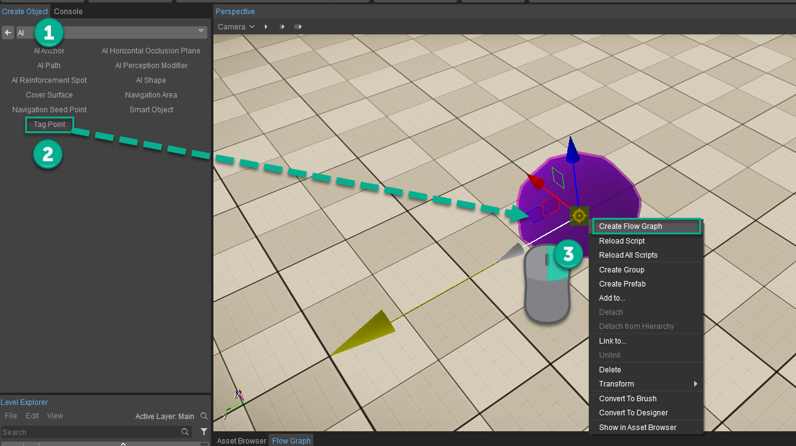
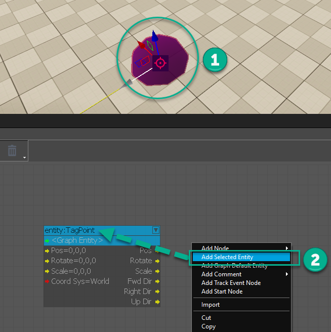
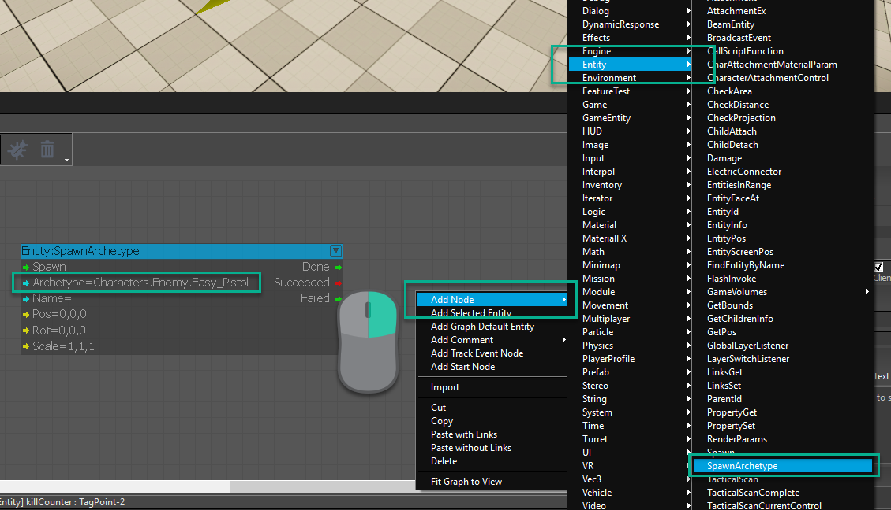
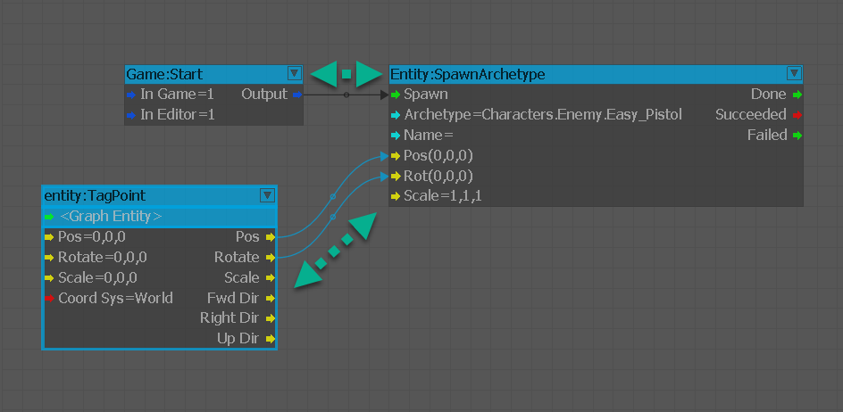
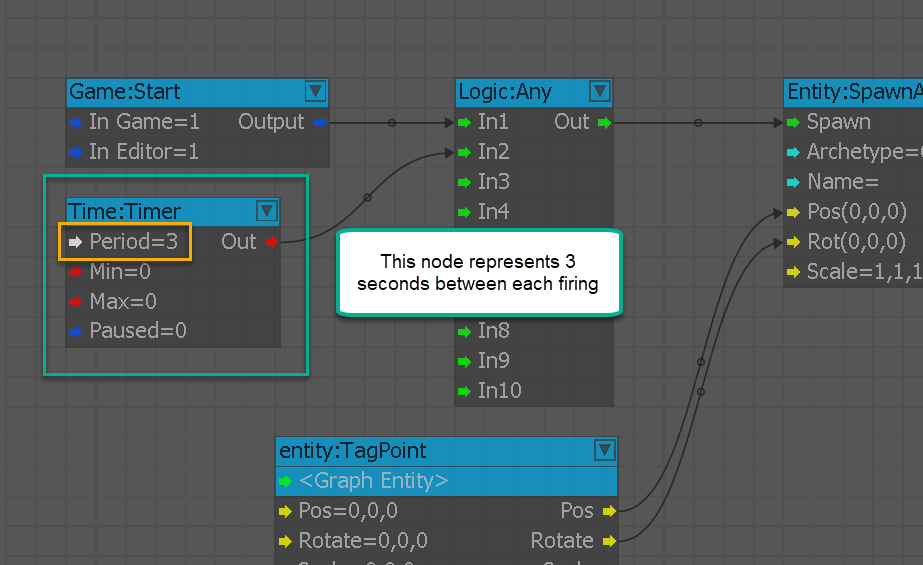
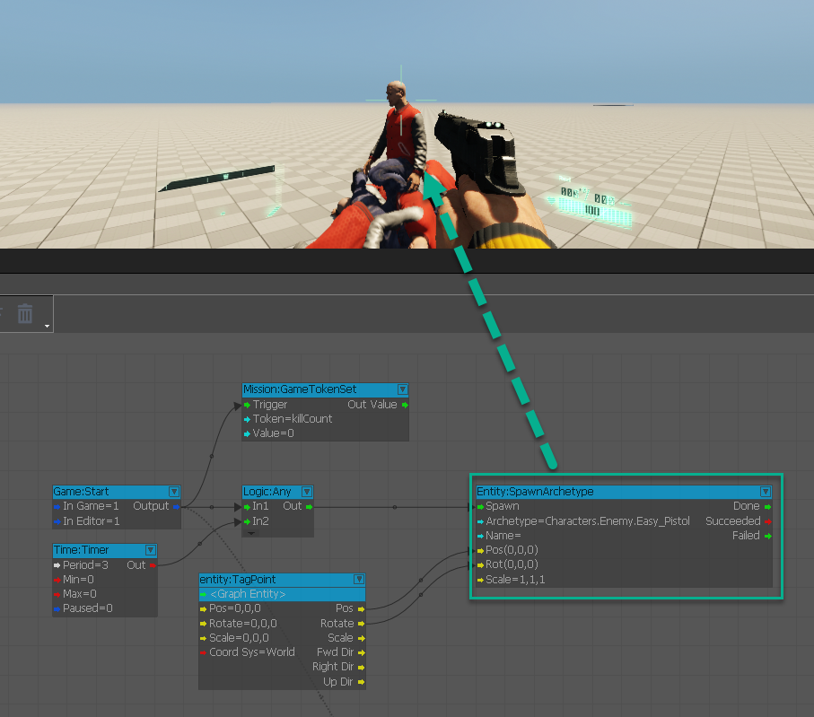

Where do I use spawning?
Inside of games you have specific genres that will require the endless spawning of AI so that the player can get a high score or they could be the minions inside of a boss battle that only depend on the health of the boss to keep spawning. Being able to understand how to utilize these Archetypes to spawn classes of AI and make them a dynamic part of the elevated gameplay is a valuable piece of knowledge to know.
In this lesson we will focus on creating an AI Tag Point and then using that position to spawn an AI every three seconds using a Timer.
How To Spawn AI Waves
You need to follow these below mentioned steps to spawn waves of AI:
- Add an AI Tag Point to the scene by going to Create Object -> AI -> Tag Point and drag it into the scene.
- Click RMB on the Tag Point and choose Create Flow Graph.
- Add a Game:Start node and then adding an Entity:SpawnArchetype node and hook the Game:Start output to the Archetype:Spawn input port.
- Finally, click RMB and select Add Graph Default Entity to add the Tag Point. Then connect this to the Pos and Rot input ports for the SpawnArchetype node to direct the spawning to a specific spot. Now we can jump in to kill the initial AI.
- With the initial spawn occurring we need to begin to spawn more based on a timed interval. To do this we will be using a Time:Timer node and setting the Period to a value of 3 second intervals. We will need this to be split with the Game:start output so we will need to add a Logic:Any node to merge the output. Now when we hop in we are able to kill multiple AI that spawn every 3 seconds.
Step 1 and 2

Step 3-1

Step 3-2

Step 4

Step 5

Final Result
